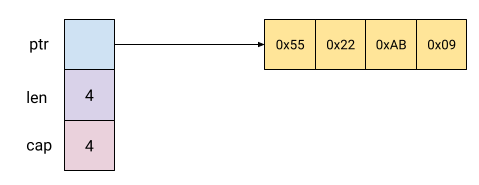
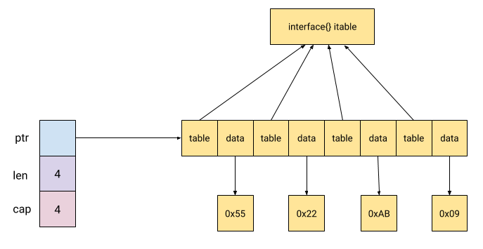

One of the most common issues novice Go programmers run into is the inability to pass a slice of a concrete type (e.g. []int64) into a function that expects a slice of interfaces (e.g. []interface{} or something like []fmt.Stringer). Why is that?
In this post, I'm going to list several answers to this question, diving into some interesting implementation details of how Go works under the hood.
The official answer
Let's begin by checking out the Go FAQ, which says:
Can I convert a []T to an []interface{}?
Not directly. It is disallowed by the language specification because the two types do not have the same representation in memory. It is necessary to copy the elements individually to the destination slice.
So it's "because the two types do not have the same representation in memory". We'll examine this reason in great depth later on in this post.
The Go Wiki provides somewhat more information:
There are two main reasons for this.
The first is that a variable with type []interface{} is not an interface! It is a slice whose element type happens to be interface{}. But even given this, one might say that the meaning is clear.
Well, is it? A variable with type []interface{} has a specific memory layout, known at compile time.
Each interface{} takes up two words (one word for the type of what is contained, the other word for either the contained data or a pointer to it). As a consequence, a slice with length N and with type []interface{} is backed by a chunk of data that is N*2 words long.
This is different than the chunk of data backing a slice with type []MyType and the same length. Its chunk of data will be N*sizeof(MyType) words long.
The result is that you cannot quickly assign something of type []MyType to something of type []interface{}; the data behind them just look different.
This answer provides significantly more details on the implementation; once again, we'll come back to it with diagrams and memory dumps later on.
Note the first reason listed in the Wiki answer though; []interface{} is not in itself an interface, so we can't just assume it behaves as such. This is an interesting point to ponder, and it serves as a good segue to a more academic answer.
The academic answer
Let's start by examining our premises. Why do we expect to be able to pass []int64 where []interface{} is expected? Well, because we can certainly pass an int64 where an interface{} is expected! So why can't the Go compiler just do what we mean?
The reason is that Go slices are not covariant. If the term "covariant" makes no sense to you in a programming language context [1], please take a few minutes to read my earlier post on Covariance and contravariance in subtyping. The rest of this section will be tricky to understand if you don't, but you are free to skip to the next section.
Go doesn't have subtyping in the classical sense, so we have to be careful with our terms here. Types implementing interfaces do behave in a sufficiently close manner though, so we can say that T <: I when T is a type that implements interface I. When we expect to pass []T into []I successfully, we want T <: I to imply []T <: []I; in other words, we expect slices to be covariant. But Go slices are not covariant; in fact, they are invariant.
To understand why, take a look at the "Covariant arrays in Java" section in the linked post. The unsoundness demonstrated there is the problem Go tries to avoid. Concretely, imagine we have this code:
func foo(ii []interface{}) {
ii[1] = "joe"
}
This is valid Go code because you can assign any type to an interface{}. Had slices been covariant, we could have invoked it as follows:
ints := []int64{1, 2, 3}
foo(ints) // oops!
If the second line was legal in Go, foo would happily assign "joe" into ints[1], but what does this even mean? In reality, it means obscure runtime errors, which statically typed languages (like Go) try hard to avoid [2].
Sharp-eyed readers will notice that this problem occurs due to the mutability of the ii parameter to foo; if the parameter was read-only, there would not be a problem, right? That's a good observation; however, Go doesn't really have the concept of const from languages like C++. In addition, there's still the implementation issue mentioned in the official answers. Let's examine this one in detail.
The practical answer - memory layout
The Go Wiki answer provides a fairly good description of what's going on, but we can certainly expand it to make things clearer.
First, let's see how Go slices are laid out in memory. The Go Blog has a good article on the topic - Go Slices: usage and internals. We'll use the following list of numbers in our explorations [3]:
is := []int64{0x55, 0x22, 0xab, 0x9}
This is how is looks in memory when the Go program is running:
Each square is a quadword - 8 bytes (assuming this runs on a 64-bit machine). The slice itself is 3 contiguous quadwords: the first is a pointer holding the address of the actual data of the slice, the second is the slice's length and the third is its capacity. These three quadwords are the slice header.
The slice data holds its elements contiguously in memory; in our case, each element fits into a quadword - so the slice data is 4 quadwords. If we had a slice of a different type, say a struct with three int64s, then each slice element would occupy 3 quadwords and the whole slice data would occupy 12 quadwords (or 96 bytes).
This suggests that the data layout of a slice depends on the type the slice holds. Going back to our original question, how does a []interface{} look in memory?
To answer this question, we first have to recall how an interface{} itself looks in memory. Russ Cox has a great post on the subject, which I encourage you to read. The gist of it is that any interface value in Go occupies two quadwords (on a 64-bit machine), because it holds two pointers: the first points to the dispatch table for the methods of the value (itable), and the second points to the runtime value itself [4].
Therefore, if we copy our slice of four int64s into a slice of interface{}:
iis := make([]interface{}, len(is))
for i := 0; i < len(is); i++ {
iis[i] = is[i]
}
This is how iis is laid out in memory:
As described before, the elements of the slice are laid out linearly, one after the other. Since each interface{} takes up two quadwords, the slice data has 8 quadwords in total. In each element, the first quadword points at the itable for interface{}, and the second quadword points at a memory location that holds the actual data - in this case the int64.
At this point it should already be obvious that we can't simply pass a []int64 where []interface{} is expected, because the slice data in both cases looks quite different in memory. Code that was written to iterate over each element of []interface{} will make a mess if passed a []int64.
Observing the memory layout in a running program
To make this material more tangible, let's look at some memory dumps. We'll be using this simple Go program throughout the rest of the post:
var sum int64
func addUpDirect(s []int64) {
for i := 0; i < len(s); i++ {
sum += s[i]
}
}
func addUpViaInterface(s []interface{}) {
for i := 0; i < len(s); i++ {
sum += s[i].(int64)
}
}
func main() {
is := []int64{0x55, 0x22, 0xab, 0x9}
addUpDirect(is)
iis := make([]interface{}, len(is))
for i := 0; i < len(is); i++ {
iis[i] = is[i]
}
addUpViaInterface(iis)
}
Ignore the addUp* functions for now; let's look at the main function and use the Delve debugger to examine the memory layout of this program at runtime. Here's a dlv session:
$ dlv debug slice-layout.go
Type 'help' for list of commands.
(dlv) break slice-layout.go:35
Breakpoint 1 set at 0x467cb5 for main.main() ./slice-layout.go:35
(dlv) c
> main.main() ./slice-layout.go:35 (hits goroutine(1):1 total:1) (PC: 0x467cb5)
30: iis := make([]interface{}, len(is))
31: for i := 0; i < len(is); i++ {
32: iis[i] = is[i]
33: }
34:
=> 35: addUpViaInterface(iis)
36: }
(dlv) p &is
(*[]int64)(0xc00003c748)
We've asked Delve to tell us the address of the slice header &is. Now we can look at what it contains:
(dlv) x -fmt hex -len 32 0xc00003c748
0xc00003c748: 0x18 0xc7 0x03 0x00 0xc0 0x00 0x00 0x00
0xc00003c750: 0x04 0x00 0x00 0x00 0x00 0x00 0x00 0x00
0xc00003c758: 0x04 0x00 0x00 0x00 0x00 0x00 0x00 0x00
0xc00003c760: 0x00 0xe0 0x10 0x00 0xc0 0x00 0x00 0x00
Each line of 8 bytes is a quadword. The first contains the address of the slice data; the second contains 4 (the length); the third also contains 4 (the capacity). Let's go ahead and examine the slice data by dumping the contents of the address contained in the first quadword:
(dlv) x -fmt hex -len 32 0xc00003c718
0xc00003c718: 0x55 0x00 0x00 0x00 0x00 0x00 0x00 0x00
0xc00003c720: 0x22 0x00 0x00 0x00 0x00 0x00 0x00 0x00
0xc00003c728: 0xab 0x00 0x00 0x00 0x00 0x00 0x00 0x00
0xc00003c730: 0x09 0x00 0x00 0x00 0x00 0x00 0x00 0x00
As expected, we see our int64 values, each occupying a quadword.
Now let's do the same for iis, which contains the same data but represented as a []interface{}.
(dlv) p &iis
(*[]interface {})(0xc00003c760)
(dlv) x -fmt hex -len 32 0xc00003c760
0xc00003c760: 0x00 0xe0 0x10 0x00 0xc0 0x00 0x00 0x00
0xc00003c768: 0x04 0x00 0x00 0x00 0x00 0x00 0x00 0x00
0xc00003c770: 0x04 0x00 0x00 0x00 0x00 0x00 0x00 0x00
0xc00003c778: 0xd0 0xc7 0x03 0x00 0xc0 0x00 0x00 0x00
Slice length and capacity are still 4, no surprises there. Let's look at the slice data:
(dlv) x -fmt hex -len 64 0xc00010e000
0xc00010e000: 0xe0 0xf1 0x46 0x00 0x00 0x00 0x00 0x00
0xc00010e008: 0xa8 0x44 0x4c 0x00 0x00 0x00 0x00 0x00
0xc00010e010: 0xe0 0xf1 0x46 0x00 0x00 0x00 0x00 0x00
0xc00010e018: 0x10 0x43 0x4c 0x00 0x00 0x00 0x00 0x00
0xc00010e020: 0xe0 0xf1 0x46 0x00 0x00 0x00 0x00 0x00
0xc00010e028: 0x58 0x47 0x4c 0x00 0x00 0x00 0x00 0x00
0xc00010e030: 0xe0 0xf1 0x46 0x00 0x00 0x00 0x00 0x00
0xc00010e038: 0x48 0x42 0x4c 0x00 0x00 0x00 0x00 0x00
Referring back to the second layout diagram above, we see that the even-numbered quadwords [5] all contain the same address. This is the address of the itable of interface{}. The odd-numbered quadwords point to data; let's take a look:
(dlv) x -fmt hex -len 8 0x4c44a8
0x4c44a8: 0x55 0x00 0x00 0x00 0x00 0x00 0x00 0x00
(dlv) x -fmt hex -len 8 0x4c4310
0x4c4310: 0x22 0x00 0x00 0x00 0x00 0x00 0x00 0x00
(dlv) x -fmt hex -len 8 0x4c4758
0x4c4758: 0xab 0x00 0x00 0x00 0x00 0x00 0x00 0x00
(dlv) x -fmt hex -len 8 0x4c4248
0x4c4248: 0x09 0x00 0x00 0x00 0x00 0x00 0x00 0x00
Indeed, this memory layout exactly matches theory.
Observing low level access in disassembly
Not to leave any stone unturned, let's dig into a disassembly listing of our program to see what code the compiler generates to access the two different slice types.
To see how []int64 is accessed, we'll disassemble the addUpDirect function (cleaning up some details for clarity):
"".addUpDirect STEXT nosplit size=41 args=0x18 locals=0x0
0x0000 00000 (slice-layout.go:11) TEXT "".addUpDirect(SB)
0x0000 00000 (slice-layout.go:12) MOVQ "".s+16(SP), AX
0x0005 00005 (slice-layout.go:12) MOVQ "".s+8(SP), CX
0x000a 00010 (slice-layout.go:12) XORL DX, DX
0x000c 00012 (slice-layout.go:12) JMP 35
0x000e 00014 (slice-layout.go:13) MOVQ "".sum(SB), BX
0x0015 00021 (slice-layout.go:13) ADDQ (CX)(DX*8), BX
0x0019 00025 (slice-layout.go:13) MOVQ BX, "".sum(SB)
0x0020 00032 (slice-layout.go:12) INCQ DX
0x0023 00035 (slice-layout.go:12) CMPQ DX, AX
0x0026 00038 (slice-layout.go:12) JLT 14
0x0028 00040 (slice-layout.go:12) RET
The interesting part is the loop between the JMP and JLT instructions. I've highlighted the line that shows the actual slice element access. CX contains the address of slice data (the slice header itself is laid out on stack), or the first data quadword. Since DX is the loop variable, (DX*8) dereferences the ith slice element. Therefore we see that the compiler expects to find the data quadwords laid out linearly.
Now let's see how the same data is accessed through []interface{}, by disassembling addUpViaInterface:
"".addUpViaInterface STEXT size=150 args=0x18 locals=0x20
0x0000 00000 (slice-layout.go:19) TEXT "".addUpViaInterface(SB)
0x0000 00000 (slice-layout.go:19) MOVQ (TLS), CX
0x0009 00009 (slice-layout.go:19) CMPQ SP, 16(CX)
0x000d 00013 (slice-layout.go:19) JLS 140
0x000f 00015 (slice-layout.go:19) SUBQ $32, SP
0x0013 00019 (slice-layout.go:19) MOVQ BP, 24(SP)
0x0018 00024 (slice-layout.go:19) LEAQ 24(SP), BP
0x001d 00029 (slice-layout.go:20) MOVQ "".s+48(SP), AX
0x0022 00034 (slice-layout.go:20) MOVQ "".s+40(SP), CX
0x0027 00039 (slice-layout.go:20) XORL DX, DX
0x0029 00041 (slice-layout.go:20) JMP 64
0x002b 00043 (slice-layout.go:21) MOVQ "".sum(SB), SI
0x0032 00050 (slice-layout.go:21) ADDQ (DX), SI
0x0035 00053 (slice-layout.go:21) MOVQ SI, "".sum(SB)
0x003c 00060 (slice-layout.go:20) LEAQ 1(BX), DX
0x0040 00064 (slice-layout.go:20) CMPQ DX, AX
0x0043 00067 (slice-layout.go:20) JGE 103
0x0045 00069 (slice-layout.go:21) MOVQ DX, BX
0x0048 00072 (slice-layout.go:21) SHLQ $4, DX
0x004c 00076 (slice-layout.go:21) MOVQ (CX)(DX*1), SI
0x0050 00080 (slice-layout.go:21) MOVQ 8(CX)(DX*1), DX
0x0055 00085 (slice-layout.go:21) LEAQ type.int64(SB), DI
0x005c 00092 (slice-layout.go:21) NOP
0x0060 00096 (slice-layout.go:21) CMPQ DI, SI
0x0063 00099 (slice-layout.go:21) JEQ 43
0x0065 00101 (slice-layout.go:21) JMP 113
0x0067 00103 (slice-layout.go:20) MOVQ 24(SP), BP
0x006c 00108 (slice-layout.go:20) ADDQ $32, SP
0x0070 00112 (slice-layout.go:20) RET
0x0071 00113 (slice-layout.go:21) MOVQ SI, (SP)
0x0075 00117 (slice-layout.go:21) MOVQ DI, 8(SP)
0x007a 00122 (slice-layout.go:21) LEAQ type.interface {}(SB), AX
0x0081 00129 (slice-layout.go:21) MOVQ AX, 16(SP)
0x0086 00134 (slice-layout.go:21) CALL runtime.panicdottypeE(SB)
0x008b 00139 (slice-layout.go:21) XCHGL AX, AX
0x008c 00140 (slice-layout.go:21) NOP
0x008c 00140 (slice-layout.go:19) CALL runtime.morestack_noctxt(SB)
I've highlighted the important lines; this loop is slightly more tricky to grok because it has to handle the type assertion, and also because the Go compiler is being fancy with instruction selection here (using LEAQ to increment a register and store it in another, in a single instruction). But after spending some time on it, it all makes perfect sense.
DX represents i in the Go code. After getting to the slice data through the header, this code iterates over the slice data. Note that SHLQ $4, DX. This is akin to i *= 16 to obtain the actual address of the slice element. 16 because each slice element is an interface{} value and hence occupies two quadwords. CX points to the beginning of the slice data, so the line MOVX 8(CX)(DX*1), DX obtains the address of the actual int64. This line is equivalent to DX = *(8 + CX + DX), which should make sense because the data pointer is the second quadword (hence the extra 8). After the jump back up, ADDQ (DX), SI adds up the value of the int64 to sum.
Whether you care about understanding this assembly code in detail, the key outcome from this exploration is that the Go compiler generates markedly different code for iterating []int64 and []interface{}, because it has to account for the difference in memory layout. This is yet another demonstration that the issue is not just theoretical, but it affects generated code in practice. If you have a compiled function designed to work in []interface{} and you pass []int64 to it, you'll end up with invalid memory accesses and crashes.
What's the solution?
So far this post described why we can't pass concretely-typed slices to []interface{} in laborious detail. But this could be very useful for a single function to operate on slices of different types! So what can we do about it?
This is where generics come in, and a followup post covers the possible solution that may become available in a future version of Go.
| [1] | No reason to worry if it doesn't. It's a fairly obscure term in programming language theory that the majority of developers rarely, if ever, encounter. I learned about it after more than 10 years into my programming career, when I started reading about programming language theory. |
| [2] | In Java, historically arrays were made covariant to provide some flexibility before generics. Since Java is boxing its types, this sort of worked out, though it lost type soundness. Go made a different design decision. As the rest of this post shows, Go doesn't box values of built-in types, so the uniformity of all types when referred to by an interface is harder to achieve. |
| [3] | These numbers are represented in hex format to make it easier to spot them in memory dumps. |
| [4] | Go does have an optimization where some types (e.g. references) can be "inlined" into the second interface quadword (instead of having a pointer to them), but we can ignore it for the sake of this post. The type used here - int64 is not inlined; moreover, even if the type is inlined it doesn't change the basic fact that the memory layout differs from that of a concretely-typed slice. |
| [5] | "Even-numbered" here refers to the lines, and the count starts at 0. |